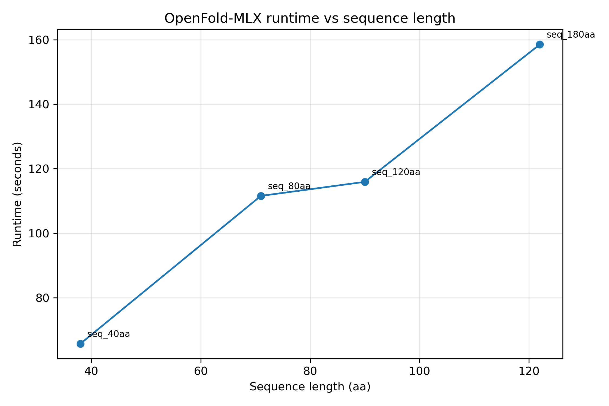
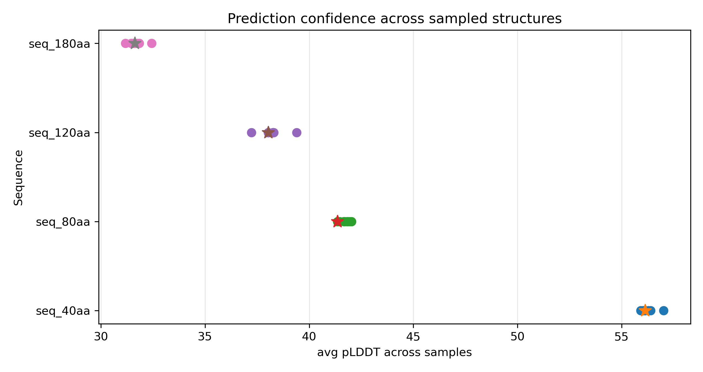

From Sequence to Structure: Running OpenFold Locally
Protein structure prediction models map amino acid sequences to three-dimensional structures. In practice, the outputs are often consumed without visibility into the computational process that produces them.
Running OpenFold locally exposes that process directly.
What OpenFold does
At a high level, OpenFold takes an amino acid sequence and predicts a three-dimensional arrangement of residues. The output is a static coordinate realization i.e. one point in a highly constrained structural space rather than a dynamic folding trajectory.
Rather than simulating folding dynamics, the model learns statistical regularities from known structures. As a result, predictions are biased toward observed structural space and may be less reliable for novel or poorly represented folds.
What comes out of a run
OpenFold outputs structural files (CIF/PDB) containing atomic coordinates and residue annotations. These are precise but not immediately intuitive representations: each coordinate reflects a local geometric decision, with associated confidence scores indicating model certainty.
Visualizing the predicted structure
To inspect the output, the predicted structure can be loaded into molecular visualization tools such as ChimeraX or PyMOL. Visualization tools convert coordinate representations into structural abstractions (ribbons, surfaces), which emphasize different aspects of the fold such as secondary structure or solvent exposure.
Below is a short rotation of one predicted structure generated during the run.
Why running locally revealed
Even for short sequences, inference involves multiple stages including feature construction, neural network inference, and coordinate generation. The computational cost is shaped as much by memory movement and hardware constraints as by the model itself.
Sequence length, attention scaling, and intermediate representations quickly dominate runtime and memory. Local execution exposes these bottlenecks directly, offering insight into why large-scale deployment of folding models remains resource-intensive despite advances in model design.
A note on CUDA and MPS
I ran OpenFold on an Apple Silicon machine using the MPS backend. This highlights that “GPU support” is not a uniform concept.
OpenFold is primarily developed and optimized for CUDA-enabled GPUs. MPS makes local experimentation possible on Apple hardware, but with different tradeoffs: tighter memory constraints, longer runtimes, and less mature kernel support.
This difference is not just about speed. It shapes the scale of the questions one can reasonably ask. Hardware becomes part of the modeling context rather than an implementation detail.
Experimental setup
The run described here was executed on an Apple Silicon laptop using the MLX-based OpenFold implementation. The goal was not to benchmark performance rigorously, but to understand what local inference looks like in practice.
- Hardware: Apple Silicon (MPS backend)
- Model: OpenFold (MLX implementation)
- Input: single-chain protein sequence
- Sequence length: 36 residues
- Number of seeds: 1
Even for small sequences, the pipeline performs several internal steps: generating MSA features, assembling input tensors, and running the structure prediction model. Most of the runtime is spent inside the neural network inference stage.
Performance observations
Running OpenFold locally makes the computational side of structure prediction more visible. Even for short sequences, inference involves several stages including feature construction, neural network inference, and generation of structural coordinates.
The figure below shows a simple runtime profile from exploratory runs on Apple Silicon using the MPS backend. The goal here is not rigorous benchmarking but to provide a rough sense of how runtime changes as sequence length increases.

Even modest increases in sequence length can noticeably affect runtime and memory usage. For this reason, local runs are most practical for short or medium-sized proteins when experimenting on consumer hardware.
Confidence estimates
Structure prediction models also report residue-level confidence estimates, reflecting the model’s support for local geometric arrangements. Visualizing these scores can help identify regions where the prediction is more certain and regions where the structure should be interpreted more cautiously.

Confidence values do not guarantee correctness, but they provide a useful signal for interpreting predicted structures and deciding which regions are more reliable for downstream analysis.
From sequence to function
Generating a structure does not directly answer functional questions. But it changes how those questions are framed. Structure provides a representation—one that can be inspected, compared, and integrated with other sources of information.
In that sense, structure prediction sits naturally between sequence and function: not as an endpoint, but as an intermediate layer of abstraction.
Code and reproducibility
I have linked the configuration and scripts used for this run in a public repository, mainly for reproducibility and future reference.
mac_protein_folder_starter (GitHub)